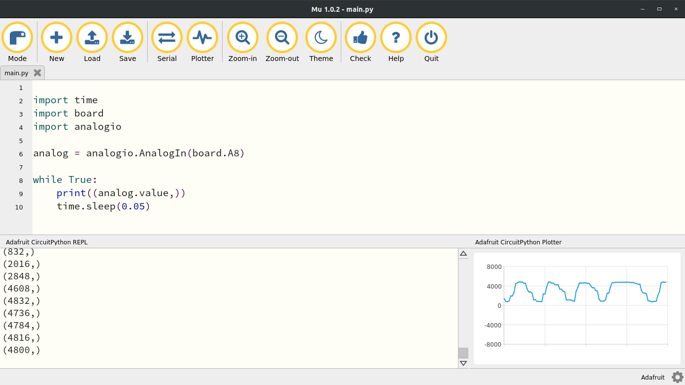
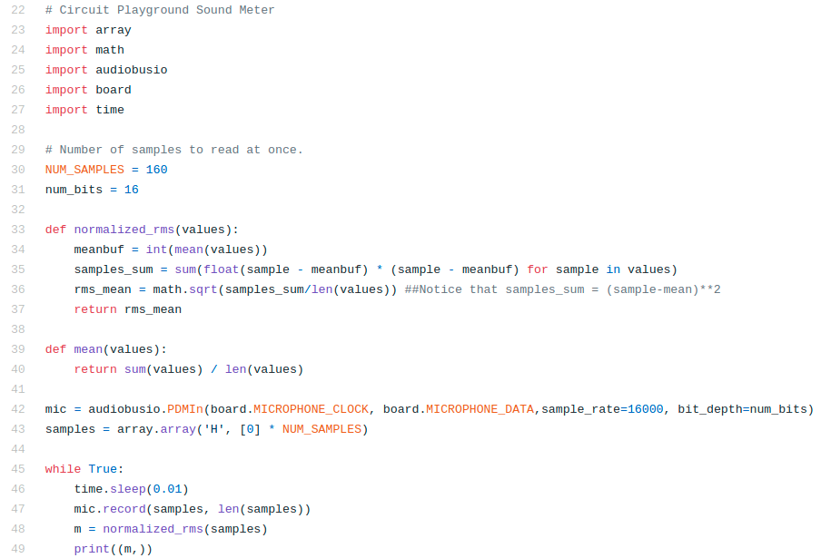
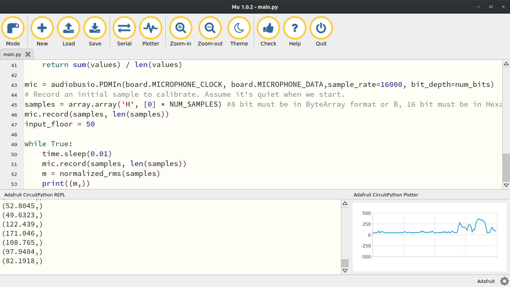
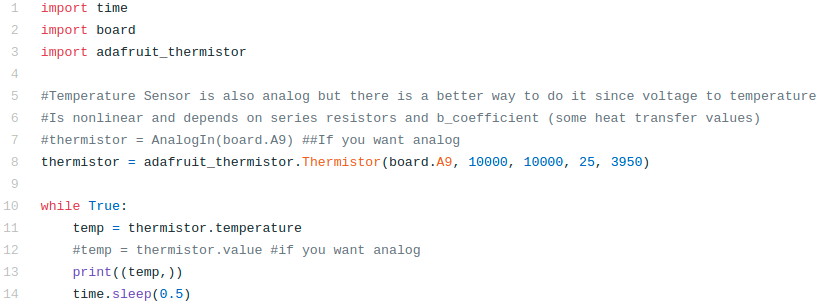
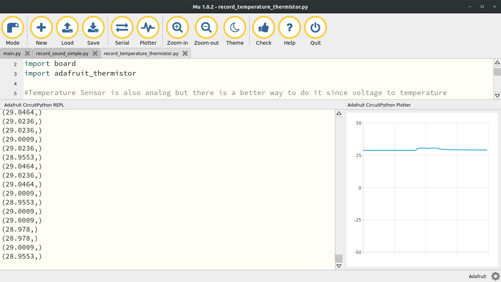
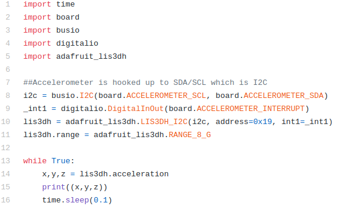
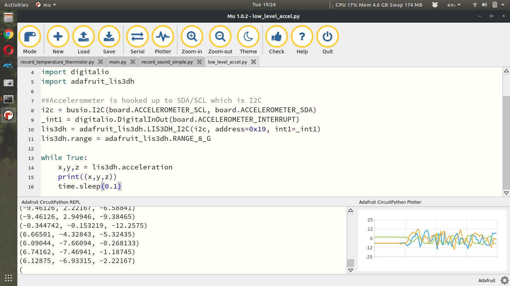

Section 13.5 Low Level Control
Subsection 13.5.1 Light
The light sensor on the CPX is just a simple photocell wired in series with a resistor. There is a lab on photocells (See Chapter 17 if you’d like to do that lab first to learn more about photocells. This lab is designed to simply teach you about the onboard sensors rather than how they work. The GND leg of the photocell is connected to pin A8. You can check the pin by looking at the graphic of an eye on the CPX and taking a look at the digital pin next to it. We’ve already learned how to access analog pins (See Chapter 11) in a previous lab so just use the code from that lab and change the pin to A8. Here’s what my code looks like when I change the pin to A8. I also brought the Plotter up and moved my finger in front of the light to make sure the light was working. Verify that your CPX responds the same way before moving on.

Subsection 13.5.2 Sound
The sound sensor uses the audiobusio library and creates a mic object using the (Pulse Density Modulation) PDM library. You have to set the sample rate and the number of bits to use to capture the data. We’re going to set the bits to 16 to utilize the whole spectrum and then set the sample rate to 16 kHz. It’s not quite 44.1 kHz like most modern microphones but it will do. After creating the mic object we have to compute some root mean squared values and thus two functions are defined before the while true loop in the code. The code itself is shown below. The code starts on line 22 because the first 22 lines are copyright from Dan Halbert, Kattni Rembor, and Tony DiCola from Adafruit Industries. I have edited the code a bit to fit my needs and uploaded my version to Github. In the code line 23-27 import standard modules as well as some new ones. The array module is used to create array like matrices. The math module is used to compute functions like cos, sin, and sqrt. Then of course the audiobusio module is used to create the mic object on line 42. Notice the two functions defined on 33 and 39 which create a function for computing the mean and for computing the normalized root mean square value of the data stream. Basically what’s going to happen is we’re going to record 160 samples as defined on line 160. So on line 43 we create a hexadecimal array (hexademical: base 16 hence the num_bits set to 16 on line 31) with 160 zeros. In the while true loop we’re going to sleep for 0.01 seconds and then record some samples. Since we’re sampling at 16 kHz the time it takes to record 160 samples is 160/16000 = 16/1600 = 1/100 = 0.01 seconds. Since we’re taking 160 samples we need to compute some sort of average which is why the normalized root mean square value is computed on line 48.

When I run this code and talk normally into the microphone, I get this output in the Plotter. You’ll notice that the data is pretty noisy in the beginning but then there are noticeable humps in the data. This is me saying something random into the microphone at normal volume. It’s possible we could increase the number of samples we take each loop by editing line 30 but that would slow down our code. So there’s a tradeoff between filtering here and speed. That’s something will investigate in some later labs.

Subsection 13.5.3 Temperature
The temperature sensor is actually a thermistor. A thermistor is basically a thermometer resistor which means the resistance depends on temperature. Since this thermistor on the CPX/CPB is connected to an analog pin, you can read the analog signal coming from the thermistor just by reading the analog signal from pin A9. If you look for the thermometer symbol on the CPX you’ll see pin A9. Therefore, it is possible to just use the analogio library and just read in the analog voltage but in order to convert to celsius and then fahrenheit you need to use some heat transfer equations to convert the analog signal to celsius.
In this case, the thermistor is wired in a voltage divider circuit in series with a \(10000~\Omega\) resistor. This means that the voltage across the thermistor can be converted to its resistance using the voltage divider equation below similar to the equation used for the photocell.
\begin{equation}
V_{thermistor} = V_{out}\frac{R_{thermistor}}{R_{series}+R_{thermistor}}\tag{13.5.1}
\end{equation}
Where \(V_{out}=3.3V\) and \(R_{series}=10000~\Omega\text{.}\) The equation above can be inverted to obtain the resistance in the thermistor which can then be converted to Kelvin. This means that the digital output from the analog to digital converter can be converted to voltage and then to resistance as has been done for various ADC labs in this textbook. Remember that \(V_{thermistor} = V_{out}D_o/65535\) where \(D_o\) is the digital output from the ADC. Once you have the resistance from the thermistor, you can use a modified version of the Stein-Hart
\begin{equation}
T_{thermistor}=\left(\frac{1}{T_0}+\frac{1}{\beta}log(R_{thermistor}/R_{series})\right)^{-1}\tag{13.5.2}
\end{equation}
where \(\beta=3950\) is a heat transfer coefficient specific to the bulk semiconductor material over a given temperature range of interest and \(T_0=298.15K\) is the nominal temperature of the semiconductor in Kelvin. Note that in the equation above, the output is in Kelvin.
Thankfully, the folks at Adafruit have done it again with an adafruit_thermistor module. If you head over to their github on this module you’ll see the relevant conversion under the definition temperature which at the time of this writing is on line 86. The Adafruit Learn system also does a bit of work to explain the conversion from voltage to temperature but I have also summarized it above and in Chapter 19. For now though we will just appreciate the simplicity of the code below which is also on my Github.

As always lines 1-3 import the relevant modules and then line 8 create the thermistor object. You’ll notice the input arguments are the pin which is A9 as well as the resistor values which are in series with the thermistor. These resistors are soldered to the PCB so they are fixed at 10 kOhms. The 25 is for the nominal resistance temperature in celsius of the thermistor and 3950 is the b coefficient which is a heat transfer property. Running this code and then placing my finger on the A9 symbol causes the temperature to rise just a bit. You’ll notice the temperature rise quite quickly when I place my finger on the sensor but when I remove the sensor it takes some time before the sensor cools off. This has to do with the dynamic response of the sensor. We’ll discuss this in some future labs on dynamic measurements. For now you can move on to the accelerometer.

Subsection 13.5.4 Accelerometer
The accelerometer is a 3-axis sensor. As such it is going to spit out not just 1 value but 3 values. Accelerations in x,y and z or North, East, Down or Forward, Side to Side, Up and Down. Since it’s reading 3 values we can’t just read 3 analog signals (we can but the accelerometer chip design didn’t want to do that) so instead we’re going to use the I2C (I like "Indigo" and 2C like "Squared C". So "I Squared C". Not "12C" or "one two C". It’s "I squared C") functionality. I2C is a type of serial communication that allows computers to send strings rather than numbers. It’s a much more complex form of communication but since it’s standard we can just use the busio module which contains the I2C protocol.

In this code we see alot more imports than normal. In addition to the standard time, board and digitalio modules we need the busio module and the adafruit_lis3dh. You might think that LIS3DH is a very weird name for an accelerometer but it’s actually the name of the chip on your CPX. The chip itself is very standard and is well documented on multiple websites. Here’s one from ST. You can also buy the chip on a breakout board from Adafruit and then of course the Adafruit Learn site has plenty of tutorials on reading Accelerometer data in CircuitPython. As always I’ve learned what I can from the relevant tutorials and created my own simple version to read the accelerometer data and posted it to Github. I digress, lines 8-11 of the code do alot. It first uses the SCL and SDA pins to set up an I2C object which establishes serial communication to the accelerometer. Line 9 creates an interrupt which is beyond the scope of this course. Finally, line 10 creates the actual accelerometer object by sending it the I2C pins, the hexadecimal address in the I2C protocol and finally the interrupt pin. Line 11 then sets the range. Line 14 in the while loop is where the x,y and z values of the accelerometer are read and then promptly printed to Serial on line 15. If I run this code and shake the sensor a bit I can get all the values to vary. If you put the CPX on a flat surface, the Z axis will measure something close to 9.81. The units of the accelerometer are clearly in \(m/s^2\text{.}\)
